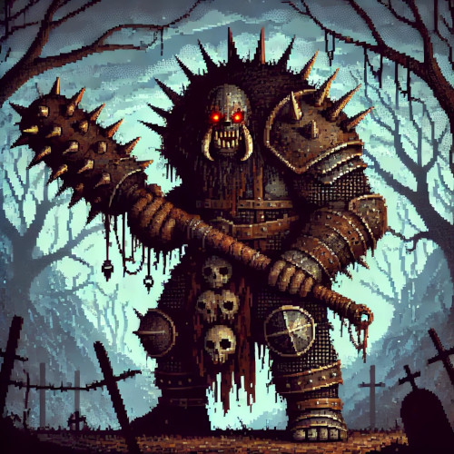

Taverna dos Cleros
O Legado do Guerreiro Medieval: Força e Honra
Em um mundo onde a espada e o escudo eram a última linha de defesa, o guerreiro medieval se destacou como símbolo de coragem e disciplina. Vestido em armaduras forjadas com maestria, ele enfrentava batalhas épicas, protegendo reinos e defendendo ideais de honra e lealdade. Sua bravura ecoa através dos séculos, inspirando histórias que celebram a determinação e o espírito inabalável de quem lutava não apenas por si, mas por seu povo.

O Grande Feiticeiro: Guardião dos Segredos Arcanos
No coração dos mistérios antigos reside o grande feiticeiro, um mestre das artes arcanas. Com um cajado imponente em mãos e um manto que parece sussurrar segredos ao vento, ele canaliza poderes ancestrais para proteger seu reino e desbravar os mistérios do cosmos. Conhecido por sua sabedoria infinita e feitiços que moldam o destino, o mago é uma figura de reverência e temor, onde cada palavra e gesto podem mudar o curso da história.

Ogro Guardião: A Força que Protege
Com músculos como montanhas e um coração leal como o aço, o ogro é o protetor fiel dos dois guerreiros. Apesar de sua aparência intimidadora, ele é um gigante de bondade, guiado por um senso inabalável de justiça. Empunhando um enorme martelo de batalha e com um rugido que faz tremer o solo, ele é a força bruta que defende seus amigos nas batalhas mais ferozes. Entre os dois guerreiros e o ogro, há uma amizade forjada em respeito mútuo e coragem inabalável.
